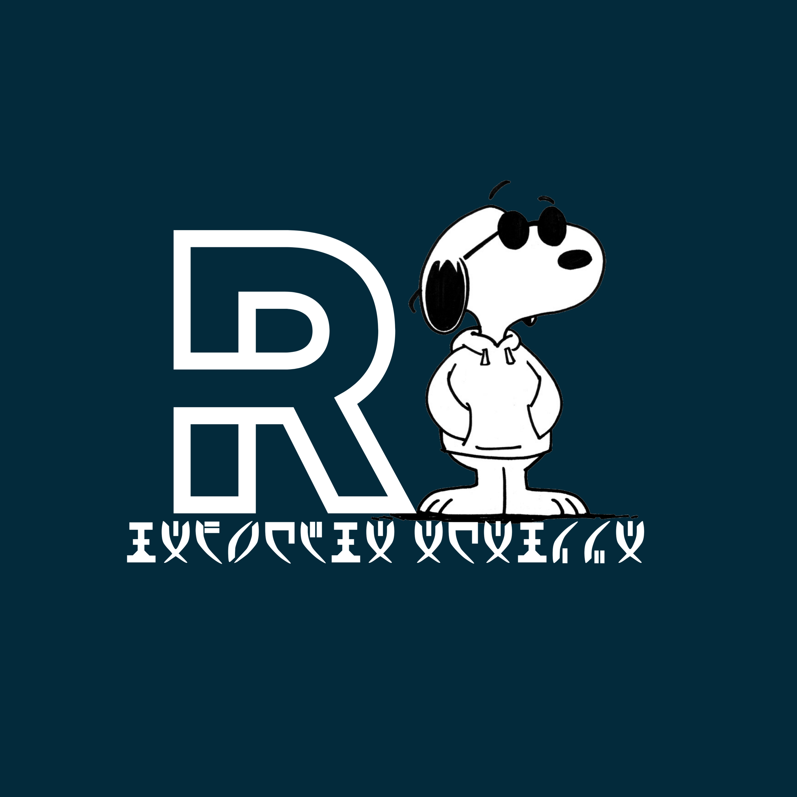

Career Summary
Work Experience
PMM - PKBN
MBKM Bela Negara - Pertukaran Pelajar
SEP 2022 - DEC 2022
Web Developer
- Membahas dasar-dasar pemrograman PHP, tipe data, variabel, fungsi, konversi tipe data, dll
- Membahas cara membuat web menggunakan PHP, melakukan query GET, melakukan query POST, membuat session, http header, dll.
- Mempelajari cara membuat ERD (Entity Relationship Diagram)
- Mempelajari tentang LRS (Logical Record Structure)
- Tugas akhir membuat web artikel berbasis CRUD ( Create, Read, Update, Delete)
Technologies used:
- HTML
- MySQL
- PHP
Studi Independen
Gamelab.ID
Aug 2023 - DEC 2023
Web Fullstack Developer
- Mempelajari JavaScript dan JQuery tentang pengetahuan JavaScript Dasar dan Tipe Data seperti Kontrol, Seleksi, dan Perulangan. Fungsi dan Rekursi JQuery Event
- Mempelajari Boostrap dan SASS yaitu mengimplementasikan modul untuk mengorganisasi, membagi, mengelompokkan kode css kedalam bagian yang terpisah.
- Mini project, membuat Sebuah web Parfumku dengan Bahasa Pemrograman HTML,CSS,JS, yang di implementasikan dengan SASS dan Boostrap
- Mempelajari Laravel Framework, Model-View-Controller (MVC), mengimplementasikan penggunaan Blade templating engine agar pembuatan tampilan dinamis.
- Mengeksplorasi pengaturan dan manajemen routing dalam aplikasi web, termasuk penanganan parameter dan organisasi route.
- Membuat Aplikasi Keuangan Pribadi Berbasis Web Menggunakan Framework Laravel Secara berkelompok, dan saya mendapatkan bagian Back end yaitu membuat CRUD pada table aruskas dana table laba/rugi, yang dimana data table aruskas dapat terhubung kedalam table laba/rugi.
Technologies used:
- HTML
- CSS
- JavaScript
- PHP
- Laravel
- Bootstrap
- MySQL
Organisational Experience
GDSC(Google Developer Student Club)
Front End
- mempelajari bahasa pemograman HTML & CSS
- mempelajari membuat web responsive dengan Boostrap
- mempelajari cara membuat repostory dan menambahkan tugas ke dalam Git Hub dengan Git.
- Membuat tampilan website penyewaan mobil berbasis HTML,CSS & Boostrap
Technologies used:
- HTML
- CSS
- Bootstrap
Skills & Tools
Frontend
-
HTML/CSS/SASS
-
JavaScript
Backend
-
PHP
-
Laravel
Education
-
Computer ScienceUniversity Bhayangkara Jakarta RayaSep 2021 - May 2025 (Expected)
-
IPSSMAN 14 Kota BekasiJul 2018 - May 2021
Language
- English (Basic)
- French (Basic)
hobbies
- listening to music
- Playing games
- watch a movie